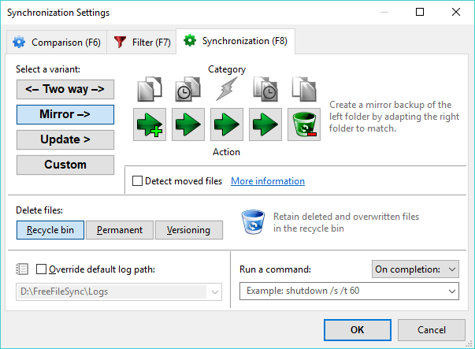

FreeFileSync is able to detect moved files on one side and can quickly apply the same move on the target side during synchronization instead of a slow copy and delete. To make this work, FreeFileSync requires database files (sync.ffs_db) to compare the current file system state against the time of the last synchronization.
The Two way variant already creates database files, therefore, detection of moved files is always active.
The Mirror variant however, does not need the database files to find synchronization directions, so detection of moved files
is not available by default. If you don't mind the creation of the database files, you can enable this feature by
selecting the Detect moved files checkbox.